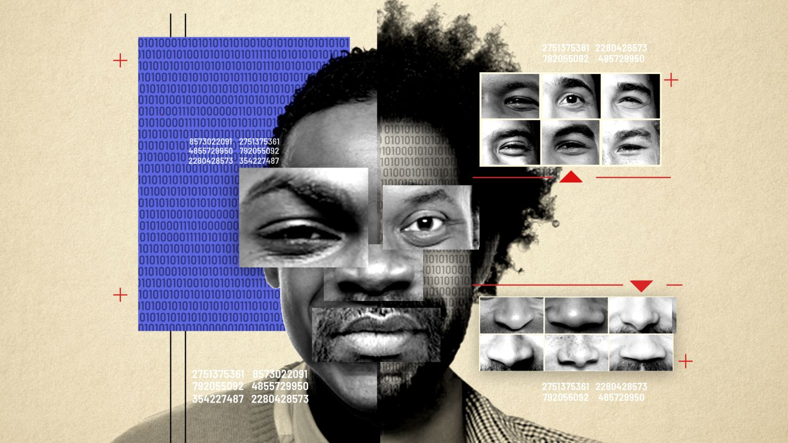

Introduction
Racial thinking the idea that people’s abilities, intelligence, or value are tied to their race has deeply impacted the tech industry. From who gets hired to who builds the tools we use, racial ideologies have influenced access, opportunity, and representation. This section explores how these beliefs shaped the industry and continue to affect innovation, equity, and justice in tech today.
Exclusion From the Beginning
From the start, tech was seen as a space for white, affluent men. Black and Brown people were often excluded from science and tech education, especially in the early days of computing. Access to resources, training, and job opportunities was limited and still is in many places.
According to the U.S. Equal Employment Opportunity Commission’s 2014 Diversity in High Tech Report, only 7.4% of employees in the high-tech sector were Black, even though Black individuals made up around 13% of the U.S. population. Similarly, Hispanic workers represented about 8% of the tech workforce, despite accounting for 18% of the population by 2019. When looking at gender and race together, the disparity grows—Black, Latina, and Native American women collectively earned just 4% of computing degrees in 2016. A Wired article (paywalled) noted that in some companies, these representation gaps have seen little to no improvement over the following five years.
"Only 2% of Black Tech workers hold leadership positions"

The Myth of Meritocracy
Many companies say they hire based on “merit,” but that idea often hides real racial bias. Hiring managers may unconsciously judge candidates based on how they speak, dress, or where they went to school — things that are shaped by race and class.
The term “culture fit” is often used to exclude candidates who don’t match the company’s dominant (usually white and male) culture.Instead of focusing on skills and potential, companies sometimes use "culture fit" as an excuse to hire people who look, act, and think like the people already there. This keeps workplaces from becoming truly diverse and continues cycles of inequality, even when the company says it supports diversity.

Bias in Tech Tools and Algorithms
Technology is often thought of as neutral, but it isn’t. Bias can be built into software, especially when it’s trained on data that reflects racial inequality.
- Facial recognition systems: Misidentify Black and Brown faces more often.
- Hiring software: Filters out names that “sound Black.”
- Predictive policing tools: Target communities of color.

Digital Redlining
Digital redlining is when tech systems reinforce inequality by limiting access to online resources and opportunities. For example:
- Some communities don’t have access to high-speed internet.
- Job ads are shown more to white users than Black ones.
- Tech education programs are less available in low-income or minority areas.

Erasure of Innovators
Many Black and Brown pioneers in tech have been left out of history books.
- Mark Dean: Helped invent the IBM PC.
- Clarence “Skip” Ellis: First Black person to earn a PhD in computer science.

Retaliation Against Whistleblowers
When people of color speak out against racism in tech, they’re often ignored — or worse, pushed out. One well-known case is Dr. Timnit Gebru, a leading AI researcher who was forced out of Google after raising concerns about racial bias in algorithms.

Reclaiming Tech Through Activism
Despite the challenges, Black and Brown communities are reclaiming tech in powerful ways:
- Black Girls Code: Teaches coding to young Black girls.
- Data for Black Lives: Uses data science for justice.
- Afrotech: Imagines inclusive futures where technology empowers all people.

References
- Brock, André. "Critical Technocultural Discourse Analysis." New Media & Society, 2018.
- Buolamwini, Joy, and Gebru, Timnit. "Gender Shades." 2018.
- McIlwain, Charlton D. Black Software. Oxford University Press, 2019.
- Eubanks, Virginia. Automating Inequality. St. Martin’s Press, 2018.
- Jeffery, Ton. Race In Tech, Part One: Inside The Numbers. Forbes, 2020